Advection-diffusion with finite differences#
import numpy as np
import matplotlib.pyplot as plt
import scipy.linalg
Diffusion test#
First, let’s do a test to make sure the diffusion part is working correctly, by evolving the Green’s function using semi-implicit spectral and Crank-Nicholson and comparing with the analytic solution. (Note that we’re using the Green’s function for an unbounded/non-periodic domain, so it behaves differently at the boundaries and won’t agree well for large times).
def gaussian(x, x0, t, D):
# Green's function for the diffusion equation
return np.exp(-(x-x0)**2/(4*D*t)) / np.sqrt(4*np.pi*D*t)
n = 128
x = np.linspace(0,1,n)
dx = x[1]-x[0]
# diffusion coefficient
D = 1
# time to integrate
T = 0.01
# timestep
alpha = 0.1
dt = alpha * (dx**2)/D
# Build the semi-implicit matrix update
aa = 0.5*alpha ## we need 1/2 the timestep for each part
CC = np.diag(-aa*np.ones(n-1), k=-1) + np.diag(-aa*np.ones(n-1), k=1) + np.diag(2*aa*np.ones(n))
CC[0,-1] = -aa # periodic boundaries
CC[-1,0] = -aa
AA = np.eye(n) - CC
Ainv = np.linalg.inv(np.eye(n) + CC)
Asemi = Ainv@AA
# initial condition
t0 = 1e-3
f = gaussian(x, 0.5, t0, D)
f_init = f.copy()
f1 = f.copy()
%matplotlib
g = np.fft.fft(f)
k = np.fft.fftfreq(n) * 2*np.pi/dx
J = complex(0,1)
nsteps = int(T/dt)
dt = T/nsteps
print("nsteps, dt, alpha, dx = ", nsteps, dt, alpha, dx)
for i in range(nsteps):
# spectral update
dg = - D*k*k
# semi-implicit
g = g * (1 + 0.5*dt*dg) / (1 - 0.5*dt*dg)
# finite-difference update
# Crank-Nicholson
f1 = Asemi@f1
if i % int(nsteps/10) == 0 or i == nsteps-1:
f = np.fft.ifft(g)
plt.clf()
plt.plot(x,f_init, ":")
plt.plot(x, gaussian(x, 0.5, t0 + (i+1)*dt, D))
plt.plot(x,np.real(f))
plt.plot(x,np.real(f1), '--')
plt.title('t=%.3lg' % (t0 + (i+1) * T/nsteps))
plt.ylim((-0.4,10))
plt.pause(1e-1)
%matplotlib inline
plt.clf()
plt.figure(figsize=((6,4)))
f = np.fft.ifft(g)
plt.plot(x,f_init, ":")
plt.plot(x, gaussian(x, 0.5, t0 + T, D), label='Analytic')
plt.plot(x, f, label='Spectral')
plt.plot(x, f1, label='Finite difference')
plt.ylim((-0.4,10))
plt.legend()
plt.show()
print("Errors:")
print("Comparing numerical solutions: ", np.max(np.abs(f1-f)))
print("Finite difference vs analytic: ", np.max(np.abs(f1-gaussian(x, 0.5, t0 + T, D))))
print("Spectral vs analytic: ",np.max(np.abs(f-gaussian(x, 0.5, t0 + T, D))))
Using matplotlib backend: module://matplotlib_inline.backend_inline
nsteps, dt, alpha, dx = 1612 6.203473945409429e-06 0.1 0.007874015748031496
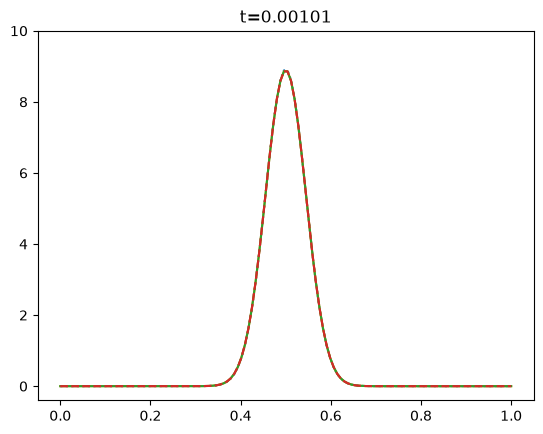
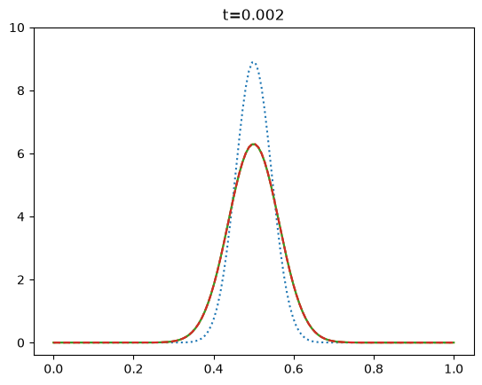
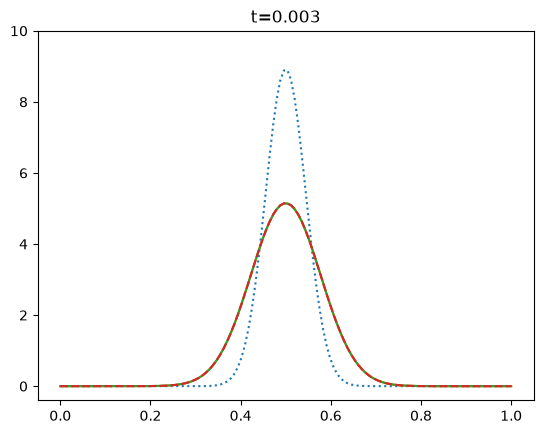
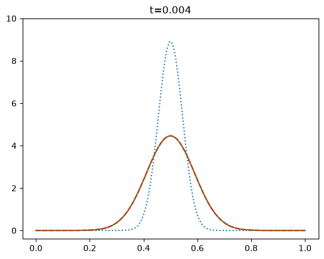
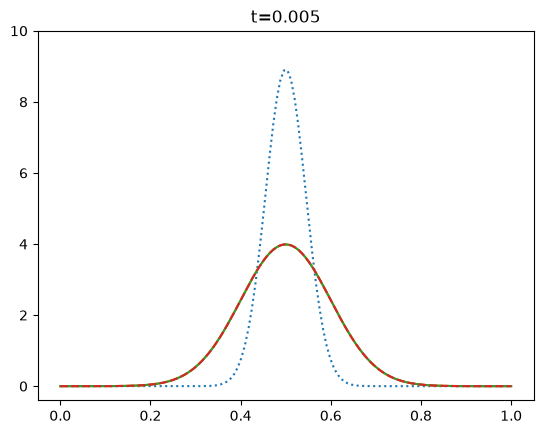
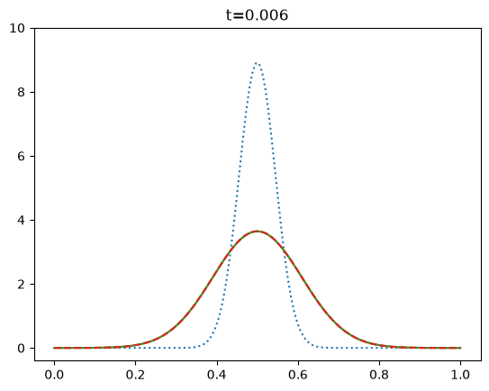
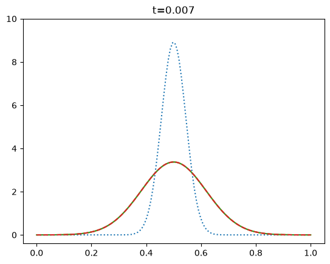
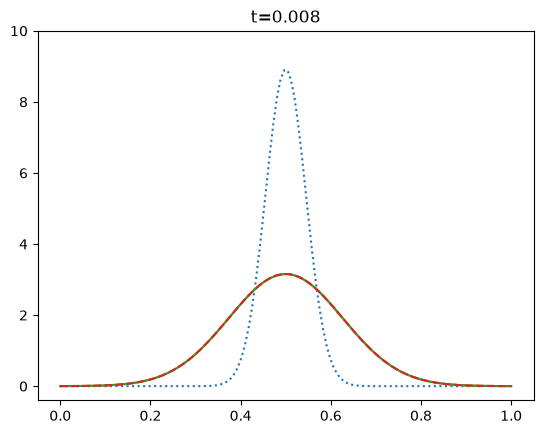
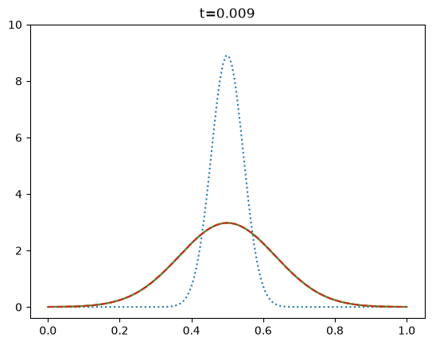
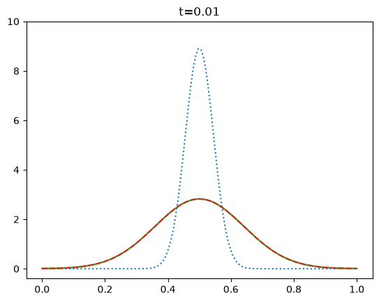
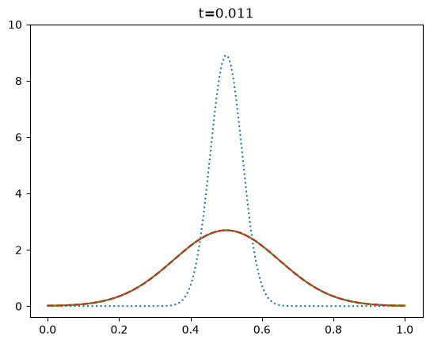
/home/cumming/projects_local/phys512_dev/venv/lib/python3.14/site-packages/matplotlib/cbook.py:1810: ComplexWarning: Casting complex values to real discards the imaginary part
return math.isfinite(val)
/home/cumming/projects_local/phys512_dev/venv/lib/python3.14/site-packages/matplotlib/cbook.py:1407: ComplexWarning: Casting complex values to real discards the imaginary part
return np.asanyarray(x, float)
<Figure size 640x480 with 0 Axes>
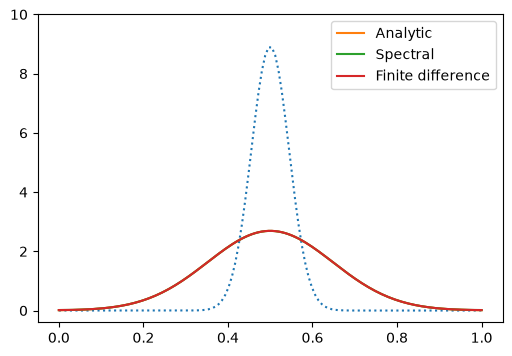
Errors:
Comparing numerical solutions: 0.001543398413279995
Finite difference vs analytic: 0.007726878548397577
Spectral vs analytic: 0.007652185275836165
Now include advection#
Now add in advection, using the 2nd order Lax-Wendroff scheme as the finite-difference update.
def do_integration(x, f, v, D, T, dt_frac, show_animation = False):
n = len(x)
dx = x[1]-x[0]
# timestep
dt1 = (dx**2)/(D + 1e-15)
dt2 = dx/(abs(v) + 1e-15)
dt = dt_frac * min(dt1,dt2)
alpha = D*dt/dx**2
beta = v*dt/dx
# Build the semi-implicit matrix update for Crank-Nicholson
aa = 0.5*alpha ## we need 1/2 the timestep for each part
CC = np.diag(-aa*np.ones(n-1), k=-1) + np.diag(-aa*np.ones(n-1), k=1) + np.diag(2*aa*np.ones(n))
CC[0,-1] = -aa # periodic boundaries
CC[-1,0] = -aa
AA = np.eye(n) - CC
Ainv = np.linalg.inv(np.eye(n) + CC)
Asemi = Ainv@AA
f_init = f.copy()
f1 = f.copy()
if show_animation:
%matplotlib
g = np.fft.fft(f)
k = np.fft.fftfreq(n) * 2*np.pi/dx
J = complex(0,1)
nsteps = int(T/dt)
dt = T/nsteps
if show_animation:
print(nsteps, dt, alpha, dx, beta)
for i in range(nsteps):
# spectral update
dg = -J*k*v - D*k*k
# semi-implicit
g = g * (1 + 0.5*dt*dg) / (1 - 0.5*dt*dg)
# finite-difference update (operator split)
# Lax-Wendroff 2nd order for advection
fp = np.roll(f1,-1)
fm = np.roll(f1,1)
f1 = f1 - 0.5*beta * (fp-fm) + 0.5*beta**2 * (fp - 2*f1 + fm)
# Crank-Nicholson for diffusion step
f1 = Asemi@f1
if show_animation:
if i % 10 == 0 or i == nsteps-1:
f = np.fft.ifft(g)
plt.clf()
plt.plot(x,f_init, ":")
plt.plot(x,np.real(f))
plt.plot(x,np.real(f1), '--')
plt.title('t=%.3lg' % ((i+1) * T/nsteps))
plt.ylim((-0.4,1.4))
plt.pause(1e-4)
if show_animation:
%matplotlib inline
f = np.fft.ifft(g)
plt.plot(x,f_init, ":")
plt.plot(x,f, label='Spectral')
plt.plot(x,f1, label='Finite diff')
#plt.ylim((-0.4,1.4))
plt.legend(fontsize='x-small')
if show_animation:
print("Errors:")
print("Comparing numerical solutions: ", np.max(np.abs(f1-f)))
print("Finite difference vs initial: ", np.max(np.abs(f1-f_init)))
print("Spectral vs initial: ",np.max(np.abs(f-f_init)))
def plot_row(v, D, dt_frac, T):
n = 128
# place the first grid point at 1/n rather than 0,
# then the advection time across the whole grid is 1/v
x = np.linspace(1.0/n,1,n)
plt.clf()
plt.figure(figsize=((9,3)))
plt.suptitle('D=%.1e, dt_frac=%lg' % (D, dt_frac))
# Step
plt.subplot(131)
f = np.zeros_like(x)
f[n//4:3*n//4] = 1
do_integration(x, f, v, D, T, dt_frac)
# Gaussian
plt.subplot(132)
f = np.exp(-(x-0.5)**2/0.1**2)
do_integration(x, f, v, D, T, dt_frac)
# sin
plt.subplot(133)
f = np.sin(2*np.pi*1.5*x)
do_integration(x, f, v, D, T, dt_frac)
plt.tight_layout()
plt.show()
# plot_row(v, D, dt_frac, T)
plot_row(1, 1e-4, 1.0, 1)
plot_row(1, 1e-4, 0.1, 1)
plot_row(1, 1e-2, 1, 1)
plot_row(1, 1e-2, 0.1, 1)
<Figure size 640x480 with 0 Axes>
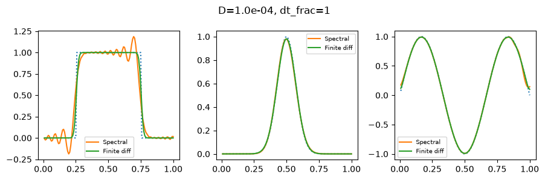
<Figure size 640x480 with 0 Axes>
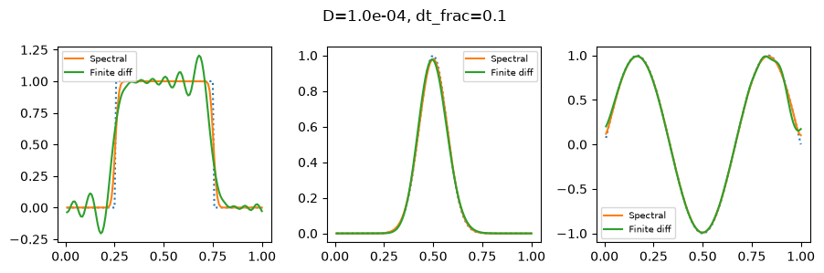
<Figure size 640x480 with 0 Axes>
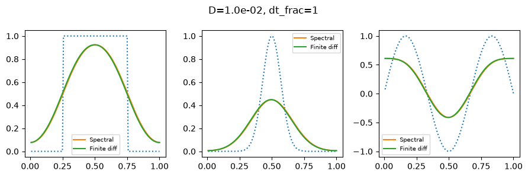
<Figure size 640x480 with 0 Axes>
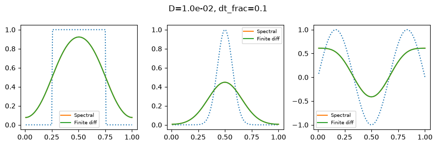